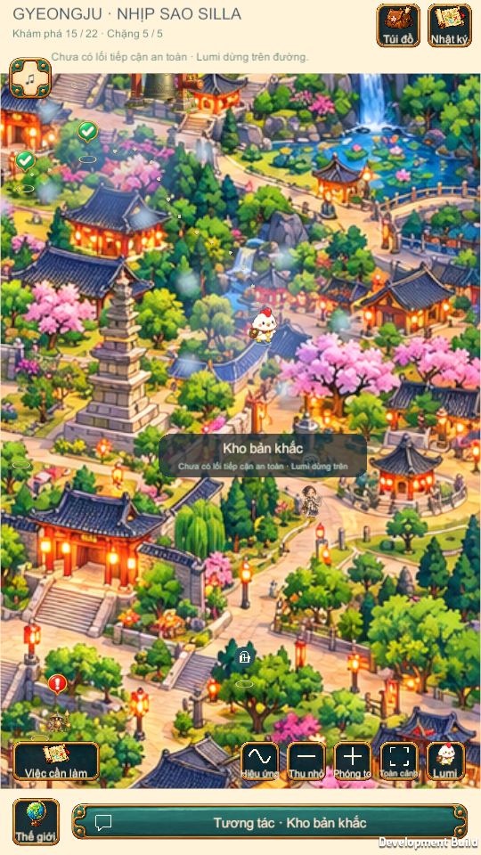
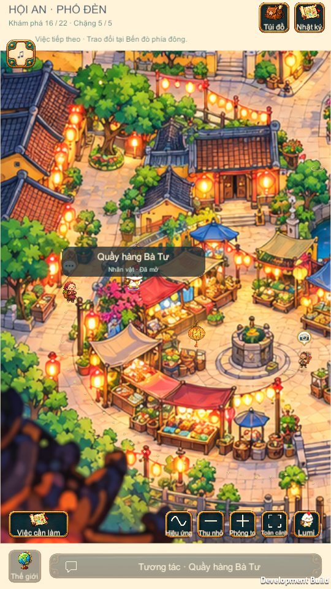
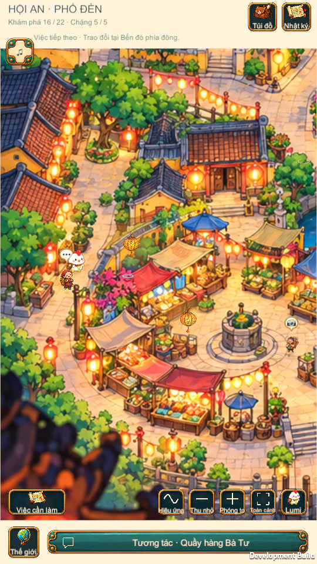
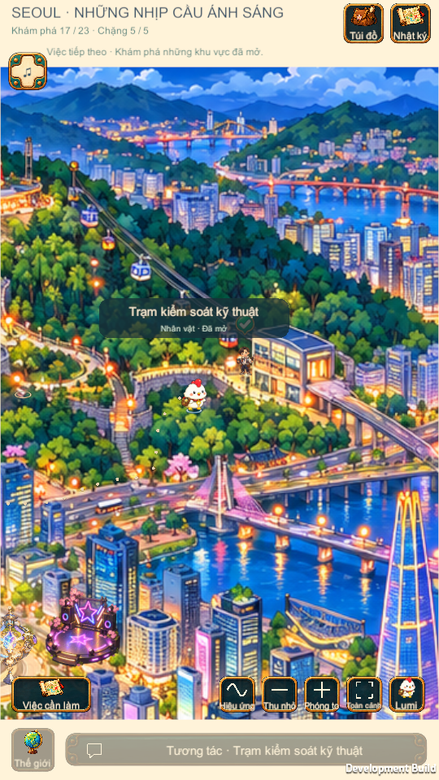
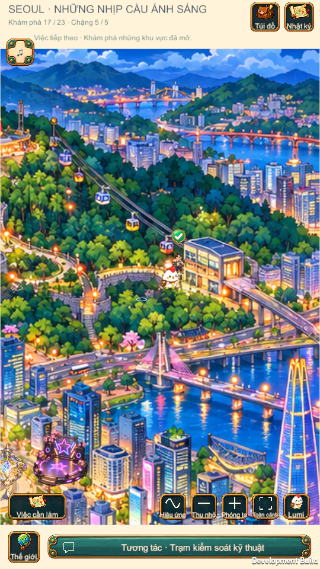
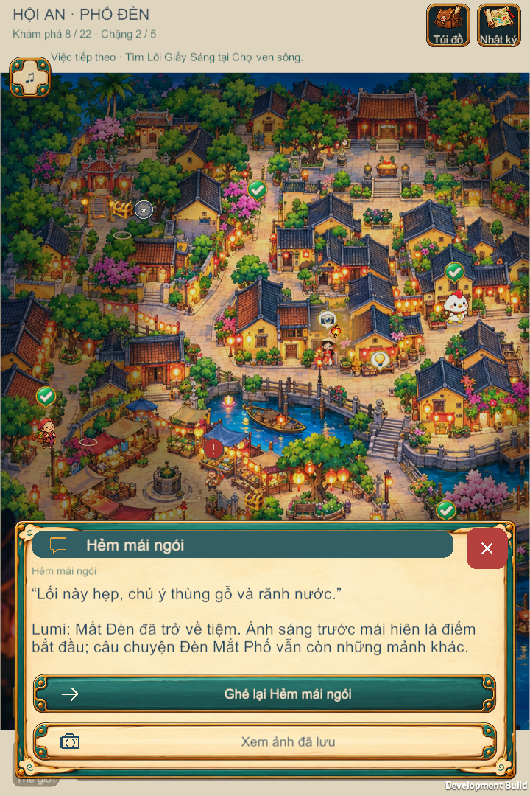

G14
BLOCKED: keep safe position; no distant NPC dialogue.



Real Windows Player frames. Same canonical map, focus and zoom within each pair. NPCs stay fixed; Lumi walks. No Android-device acceptance is claimed.
PARTIAL: G14 has no verified safe approach. Other tested actors: 25/26. Graph, canonical arrivals, art and saves remain intact.
Ba Tu: Lumi walks from arrival onto the existing street.


Station: short approach on the paved forecourt.


BLOCKED: keep safe position; no distant NPC dialogue.


The current genuine actions fit without scrolling. Overflow drag is NOT_TESTED in this fixture.